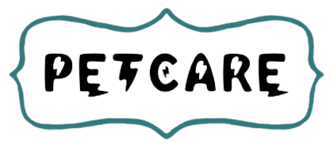

<mat-toolbar>
  <div class="logo">
    
  </div>
  <div>
    <a mat-button class="action-button" routerLink="/veterinary-home">Inicio</a>
    <a mat-button class="action-button" routerLink="/veterinary-appointment">Citas</a>
    <a mat-button class="action-button" routerLink="/veterinary-publish-product">Productos</a>
    <!--<a [routerLink]="[]" (click)="clickMethod()">Your Link</a>-->
  </div>
  <span class="example-spacer"></span>
  <div>
    <button mat-icon-button class="account-circle" aria-label="Example icon-button with account circle icon" routerLink="/veterinary-profile">
      <mat-icon>account_circle</mat-icon>
    </button>
  </div>
</mat-toolbar>
<div class="responsive-navbar" [class.open]="navbarOpen">
  <a mat-button class="action-button" routerLink="/veterinay-home">Inicio</a>
  <a mat-button class="action-button" routerLink="/veterinary-appointment">Citas</a>
  <a mat-button class="action-button" routerLink="/veterinary-publish-product">Productos</a>
</div>
